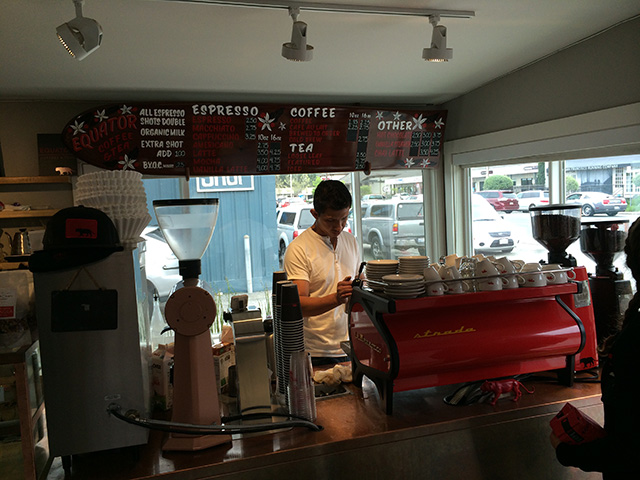

Moving to California
What can I say about California that you haven’t heard yet?
Such a diverse place with warm braces in the south, mountains just a few hours away, big metropolitan cities, quaint little towns, What’s not to love?
I moved to Marin County, California on January 2008 escaping the dangerous street gangs from El Salvador. It was the scariest yet most exciting thing I had done. New country, new culture, new language and I was moving in with strangers.
It was overwhelming at first, no matter how much online research I did, things were not as easy as I imagined. After getting all my paperwork done, it was easy to find a job before the housing crisis, there were plenty of entry-level jobs. I started cleaning cars at a local car wash, not the easiest job but a job none the less. Since I had studied English in school I was able to mumble and communicate basic sentences with the locals, this opened my first opportunity to move up. Management promoted me to a salesman, you know the guy who tries to upsell you the wax or carpet details every single time you wash your car.
Everything was going great, I had more money than I had ever owned, I was able to purchase my first car, a 1993 Honda Civic coupé. I was flying, and as I was enjoying and expending all the fruit of my labor, the financial crisis happened. I was laid off, with almost no money saved and living paycheck to paycheck I panicked, I did not know what to do, rent was due soon and I learned a lesson that day: Always save money because life happens. I remember perfectly when I paid my rent and was left with 13 dollars in my bank account.
I was able to find a job at a supermarket working the deli counter, this helped me stretch the money a little more saving on food and transport since it was 5 minutes away. This is where I learned humility and hard work, washing mountains of dirty dishes, cleaning grease traps, getting verbally abused for not putting extra meat in sandwiches for free, but after six months I was due for a performance review. I was excited about all my hard work, working on my birthday, Christmas, and new year going to finally pay off. Once I sat with the assistant store manager I was so happy to hear that I had earned the highest possible pay raise $0.25.
I was heartbroken, but after talking to my coworkers I realized that was the life of the unskilled immigrant. One of my coworkers explained to me what the movies and shows don’t, If you don’t have a degree, don’t speak the language and/or live there illegally, you have to work two jobs and make big compromises in comfort. He worked at the supermarket, was a prep cook at a restaurant, and cleaned offices in his days off all while sleeping in someone’s living room to pay as little as possible. With time I found new opportunities and learned as many skills as I could to earn more money.
Three years later I had climbed the corporate ladder, became Assistant Manager for a coffee shop and I was able to save money again. I worked my ass off, going the extra mile, asking my bosses guidance, and doing everything possible to finally become a Store Manager. Then life stroke again, the company I worked for was sold to Starbucks, my boss and his bosses all left the company, a month later I talked to the new regional manager and explained my situation and I had two choices, either I work my ass off again to prove to the management I was worthy of managing a store or look for new opportunities.
At around 8 years after I moved to California, I met the love of my life, my wife Marta. After trying over and over again, being taken advantage of every time, just to please my ego of becoming a manager, which by the way is the worst position to work in food service because you work the most and get paid the least, I decided to change roles and I started working as a Server.
This was the best job ever! Short hours, great money, I was finally able to take time off and discover all the beautiful things California has to offer. The beautiful beaches of southern California, Sequoia, Yosemite, Mammoth national parks, Santa Barbara and central valley, Wine Country, Lake Tahoe, etc.

My Recommendations
Bay Area
- Mill Valley Beerworks
- Joinery Beerhall
- Al´s place
- Sweetwater Music Hall
- Fort Point Brewery
- Blue Bottle Coffee
- Verve Coffee Roasters
Wine Country
- Sribe Winery
- Somaine Carneros
- Miner Winery
- Oxbow Market
Los Angeles
- Verve Coffee Roasters
- Intelligentsia Coffee Roasters